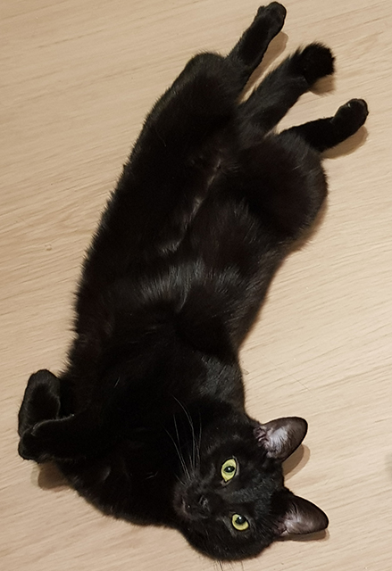

 <section class="d-flex">
<figure class="m-3">
  
</figure>


<aside class="aside">
  <p >Idea ohjelmaan lähti astmaan sairastuneesta Luna-kissasta, joka käyttää sairauden hoitoon kahta eri lääkettä.</p>
  <br>

      <p>  Molemmat lääkkeet ovat inhaloitavia, joten purkeista ei näe päällepäin,
        montako annosta purkissa on jäljellä.</p> <br>

<p> Jäljellä olevien annosten laskemista vaikeuttaa myös se, että molempia lääkkeitä on eri purkeissa eri annosmäärä.</p>
    <br>
    <p>   Ohjelmassa käyttäjä pystyy syöttämään jomman kumman tai molempien lääkkeiden käytetyt annosmäärät, resetoimaan käytetyt annokset sekä näkemään, milloin viimeksi annoksia on käytetty ja paljonko niitä on kummassakin lääkkeessä
      jäljellä.</p>

  </aside>
</section>


